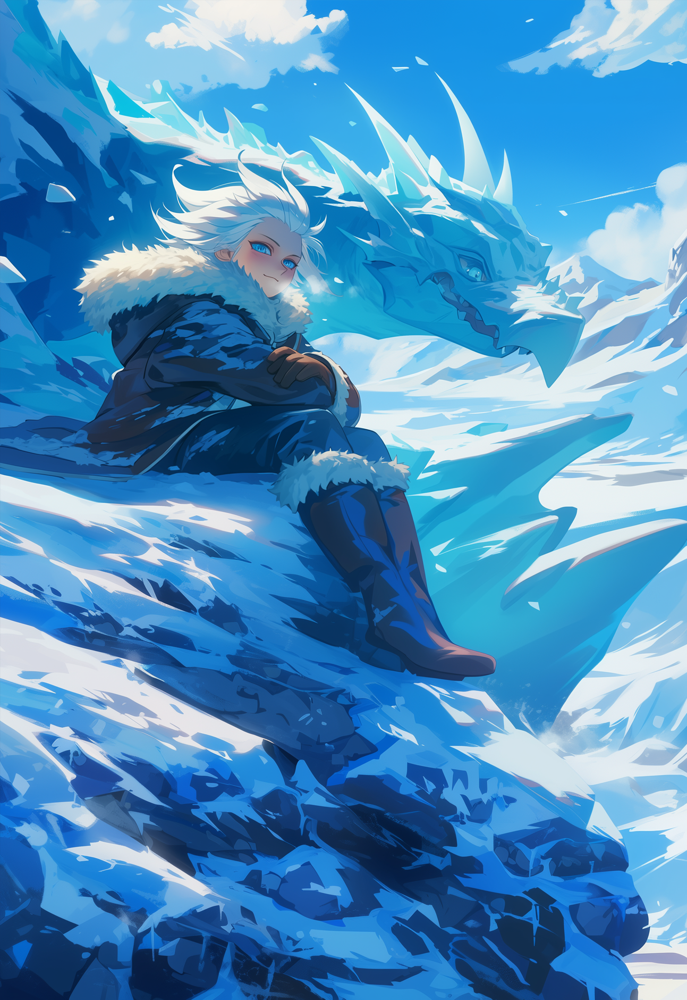
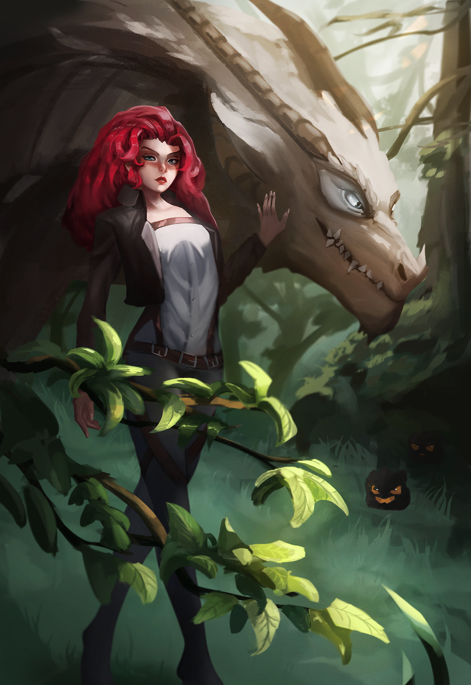
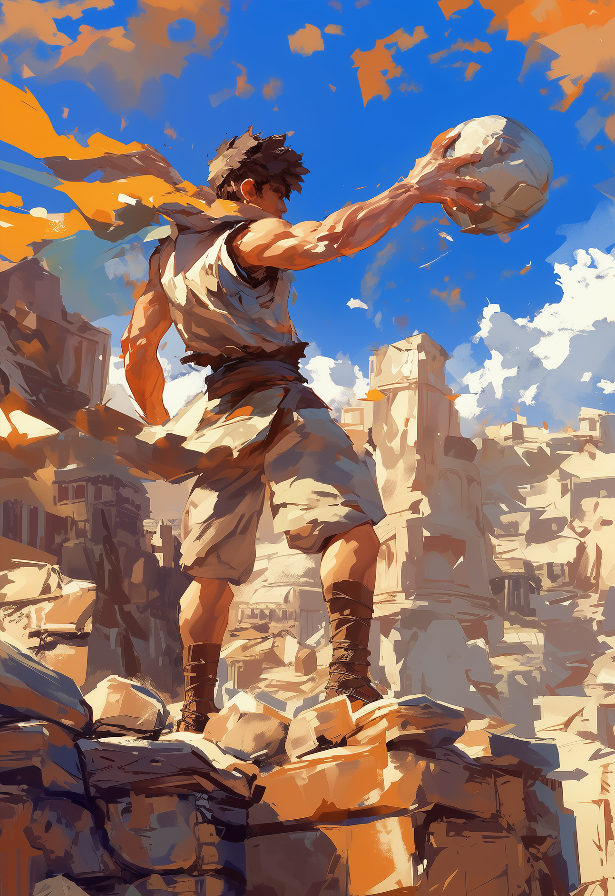
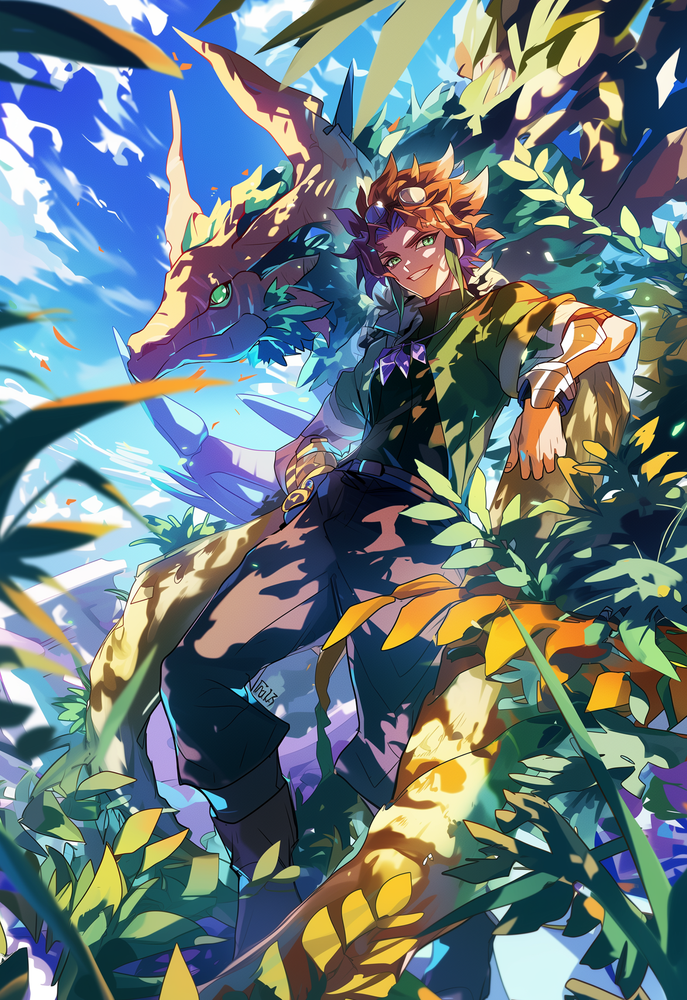

Frost

Moqué dans sa jeunesse pour ses traits animaliers, Frost devient Dragonnier et combat pour sauver les terres maudites.
Lisa

Orpheline de guerre, Lisa apprend la magie et devient Dragonnière, guidant ses pairs et combattant aux côtés de Frost.
Zayd

Élevé dans les dunes de Shal'Zaar, Zayd développe sa force herculéenne et part à la quête du Codex Primordial.
Maître des Teintes

Enfant des rues, il transforme ses cauchemars en connaissances et rejoint la quête avec Zayd.
Gorakar

Part à l’aventure avec son dragon, explore les îles et aide à purifier la Mer Etoilée.
Heraldesse

Communique avec les créatures et accompagne les héros dans leurs quêtes périlleuses.